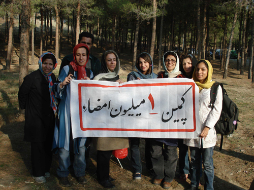

|
|

جمع آوری امضا به صورت گروهی
ردی از برابری
ستاره هاشمی
دو شنبه9 دی 1387
وقتی مردان سخن می گویند و زنان نگاه می کنند...
هیچ وقت در اتوبوس و مترو یا هر جایی که آدم ها در انتظارند به نگاهشان دقت کرده اید؟ بعضی نگاه ها بی تفاوت است. بعضی خیلی متفکر. خیلی چشم ها آنقدر خسته اند که خودشان را نمی توانند تحمل کنند. انگار دیگر با دیدن بیگانه باشند.
گاهی اوقات هم چشم ها پر از ترس و احتیاط می شود. مثل نگاه کودکی به مادرش وقتی می خواهد کار اشتباهی انجام دهد یا مثل نگاه زنی به همسرش وقتی می خواهد کار اشتباهی انجام دهد!
جمعه 8 آذر ماه است و با هماهنگی و همراهی کارگروه جمع آوری امضا به یکی از پارک ها رفته ایم.
نزدیکی های ظهر است و پارک پر از خانواده هایی که جمعه را از مشغله های هر روزه خالی کرده اند و شاید انتظار مزاحمی را که برایشان از قانون و برابری حرف بزند ندارند و البته شاید هم از چنین مهمان ناخوانده ای استقبال کنند...

خانواده ای که با آنها صحبت می کنیم جایی بین این دو دسته است. اجازه می دهند که کنارشان بنشینیم و صحبت را آغاز کنیم. بعد از توضیحات ما مرد می گوید: من کارگرم. سواد ندارم و سر در نمی آورم. امضا نمی کنم.
از زن می پرسم: شما چطور خانم؟ شما امضا نمی کنید؟
به مرد نگاه می کند.
مرد می گوید: حرف های شما درست است. من قلبم درد می کند. نمی خواهم وقتی می میرم زنم زیر دست برادرم بیفتد. او هم با من برای این زندگی زحمت کشیده. اما ما امضا نمی کنیم.
زن همچنان نگاه می کند. درست مثل نگاه کودکی به مادرش وقتی موهای عروسکش را کوتاه کرده و زیر فرش پنهان کرده است.
تشکر می کنیم از همراهی شان. مطمئنم دخترکشان خیلی فهمید. نگاه گستاخی داشت.
البته این تنها تجربه ی آن روز نبود، امیر و نوشین هم به چنین موردی برخورد کردند:
مرد می گوید معلم است و از بی نتیجه بودن اعتراض معلمین می گوید و اینکه این گونه فعالیت ها بی فایده است. زن هیچ نمی گوید.
نهایتا مشخص است که مرد امضا نمی کند.
 همسرتان چطور؟
همسرتان چطور؟
ایشان هم امضا نمی کند.
 لطفا بگذارید خودشان بگویند.
لطفا بگذارید خودشان بگویند.
زن پاسخ می دهد: هر چی حاج آقا بگوید.
تنهایشان می گذارند تا حاج آقا همچنان حرف بزند.
از امضا تا تغییر
همسر مردی که با اشتیاق خاصی برگه را امضا می کرد به مریم زندی اعتراض می کند:
این نمی گذارد من کار کنم. نمی دانم چرا دارد تند تند امضا می کند...
مرد پاسخی نمی دهد. به همه دستور می دهد که امضا کنید و در آخر می گوید: زن باید کار کند، قوانین باید عوض شود. اما همه ی این ها مال زن های آینده است.
مریم مالک هم از زن و مردی می گوید که هر دو با تغییر قوانین موافق بودند. اما زن قبل از امضا کردن از مرد اجازه گرفته است.
نماز خواندن و امضا کردن!
امضا گرفتن از بعضی آدم های مذهبی هم داستانی دارد. آنقدر قضیه را بالا و پایین می کنند که با شرعیات مغایرت نداشته باشد که چیزی از بحث اصلی باقی نمی ماند. اما گاهی خلاف عادت هم اتفاق می افتد:
ناهید با زنی مواجه شد که نه تنها خودش امضا کرد که در حال نماز به دوستانش اشاره می کرد که زودتر برگه را امضا کنند!
آنچه بر جا می ماند
بعد از نهار شهاب از تاثیر ثانویه جمع آوری امضا می گوید و اهمیت بحثی که باقی خواهد ماند. پروین و جمشید در تایید گفته ی او از برخورد متفاوت گروهی از دوستان حرف می زنند و بحثی که میان آنان ایجاد شده:
یکی از آن ها می گوید: اگر قرار باشد ارث و این طور چیزها به نفع زنان شود، من اصلا حاضر نیستم... پدر من هم اگر بخواهد برود زن بگیرد، برود بگیرد. حقش است.
دیگری انگار تا به حال او را نمی شناخته، حیرت زده می پرسد: یعنی تو ناراحت نمی شوی که پدرت زن دیگری بگیرد؟
گفت و گو ادامه پیدا می کند. در حالی که یکی از آن ها در حال امضا کردن برگه است، بقیه با تمسخر نگاهش می کنند... خب، این هم نوعی از نگاه است.
نمی دانم هیچ وقت در اتوبوس و مترو یا هر جایی که آدم ها در انتظارند به نگاهشان دقت کردید؟ بعضی نگاه ها بی تفاوت است. بعضی نگاه ها هم بی تفاوت نیست. می رویم و نگاه هایمان در پارک جا مانده... ردی از برابری...